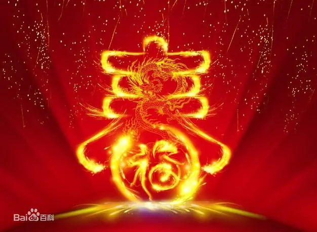

春节精神，团圆、祝福、祥和、感恩、憧憬。春节作为一个气魄宏大的民俗节日，之所以成为民族的伟大传统，就是因为它离不开每一个社会成员的参与和传承。虽然在春节期间个人可以运用不同的知识和经验，扮演好各自不同的角色，但都是汇入到一个完整的春节文化系统中，使春节能够实现其无与伦比的精神价值即凝聚社会的巨大力量。
作为强大传统的春节是集中展现中华民俗文化的节日，也是由全民族共同承担和运作的一个历史久远、内涵丰厚的传统。尽管有许多旧日的民俗文化正在消失，但是春节作为一个整体传承的文化现象是不会消失的，因为它承载着我们民族的灵魂。进一步来看，像春节这类全民族的节日文化，它们呈现给我们的并非是一个个固定的模式，而是表现出地方的多样性，具有丰富多彩的面貌，体现了各地民众欢度节日的热情和自由的心境。
从精神层面上讲 春节是在“与天地合其德，与日月合其明，与四时合其序，与鬼神合其吉凶”（《周易·文言传》）的“天人合一”文化中，人在精神上归其所宗，并除旧迎新，开始新一年生活的节日，是人面对上天、自己、家人和社会，并在自己“过一年”后的总结、反省、对成就自身的新展望中所展开的庆祝、感恩和祭拜活动的节日。 从精神层面上讲 在天人关系中： 当四时交替，旧年过去新年到来时，也产生自己新的憧憬。孟子说：“仰不愧于天，俯不怍于人”（《尽心上》）。这需要每个人在每天的生活中时时提醒自己，也需要某种文化节日的形式来表达这个精神追求下的成就、理想及其庆祝和感恩。春节的祭拜和回家是人归其所宗的精神认同，春节的热闹是对人的生存成就的庆祝，春节的感恩是在“成己”文化的精神性伙伴关系中，一谢上天所赋之赐，二谢父母养育之恩，三谢社会合作之福。诚敬、谦恭、老实、不忘本、为人正直、担当责任、与人为善、善于合作、勤劳朴实、惯于学习等等中国人民的传统美德正是在这样的文化传统下塑造和培养出来的。